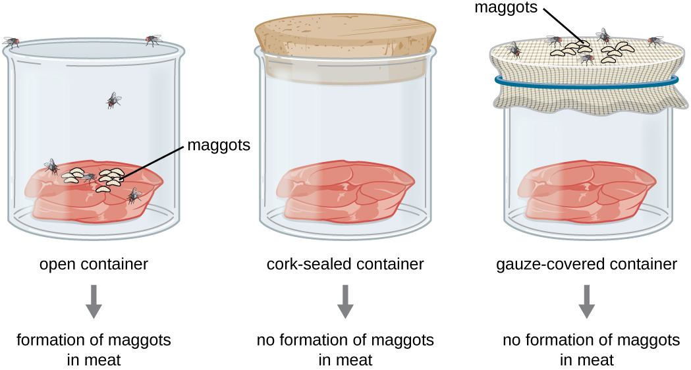

Have you wonder what you are composed of? We humans are composed of cells. Cell are something that is really important. In the year of 1650s the cell theory is discovered.
The cell theory started to develop because of the discovery of microscope who was discovered by 2 scientists called Anton van Leeuwenhoek (Holland) and Robert Hooke (England).
Both of them made the microscope independently, this means that they made it separately. Just when Anton Van Leeuwenhoek is done making his own version of microscope, he directly observe many things.
He was the first person who observed single-celled organisms.
Learn more about Anton van Leeuwenhoek!
Some of the examples he observed are blood cells from humans and dogs, pond water, sour milk, semen, etc. He found out small organelles when he observed the pond water. He then called them animalcules because they look like small animals. He ever made a sensation because he stated that sperm cells contain tiny human beings. You guys maybe asking, where do you get the name "cells" for cells? Cells are called "cells" because of Robert Hooke's discovery. In 1665, he discovered cells when he was looking at a thin slice of cork through the microscope he made. In the thin slice of cork, he noticed little units that made up the slice of cork. These units reminded him of cells that monks lived in and decided to call it "cells". He described the cells as tin boxes or honeycomb. He thought that cells are only found in plants and fungi, but Anton Van Leeuwenhoek found out that cells are found in both animal cells and plant cells.
After this discovery there are some theories that stated that there are living things that can spontaneously appear from nonliving material. One of the example is like mice could be created spontaneously by putting grain in dark quiet place and leaving it for a few weeks. This theory was made by John Needham. Francesco Redi, Lazzaro Spallanzani, and Louis Pasteur disagree with this theory. The three of them tried to do experiment to prove that this theory is wrong. Redi made an experiment involving 2 jar containing rotting meat, one with a cover and one without a cover. His hypothesis is " If a jar containing rotting meat is covered, then it will produce no flies". The conclusion supports his hypothesis, which is that flies won't grow if they can't lay eggs on the meat. However, many people rejected his claim. Their reasoning is that sealing the jar prevented a magical essence from entering the rotting meat and bringing it to life.

After that Spallanzani also tried to prove the spontaneous generation theory by redoing the experiment of John Needham. He believed that microbes that spoils food comes from the air and can be killed by boiling. His hypothesis is " If air is allowed to reach food, then microbes will get in and cause it to spoil." The experiment uses 2 flasks, one have boiled broth with the sealed open and another one boiled broth with the sealed shut. There are also objections to Spallanzani's experiment. They said that sealing the flask shut blocked the entrance of a magical life force in the air from getting to the broth. There are people who believed him because they had seen these microbes. The next person to doubt and disprove John Needham's theory is Louis Pasteur. Do you know pasteurize milk? Thanks to Pasteur the pasteurize milk was made. He invented the Pasteurisation, it is when there are sterilisation by heat. He proved that heat can be used to sterilize foods and preserve them in sealed glass containers and later cans. In his experiment to disprove John Needham's theory, he improves Spallanzani's work. He uses special "swan-neck flasks" that allowed air in but traps bacteria. His hypothesis is " If the boiled broth is kept free of bacteria then it will not spoil even if air can reach it." He is the father of modern microbiology. He proved the last part of the cell theory which is "Cell only come from preexisting cells."
Know more about Louis Pasteur!
In the development of cell theory there are more scientists such as Matthias Schleiden, Theodor Schwann, Rudolf Virchow, etc. In 1838, Matthias Schleiden who was a German Botanist concluded that all plant parts are made of cells. In 1 year, 1839, Theodor Schwann a German physiologist who was a close friend to Schleiden stated that all animal tissues are composed of cells. In 1858, Rudolf Virchow a German physician concluded that cells arise from preexisting cells after extensive study of cellular pathology. Then in the late 1870s, doctors start washing their hands and instruments before operating. One of the reason is because scientists who proved Ignaz Semmelweis's discovery about washing hands before helping mothers deliver their babies. At Semmelweis's time he doesn't have a concrete evidence about his discovery. He found this discoveries when he realized that lesser mothers died when he washed his hands before operations. He tried to tell other doctors, but they said he was crazy and didn't want to listen to him. After he died the scientists tried to dig deeper his discoveries and found out it is true.
There are some types of cells or tissues that don't conform to a standard notion of what constitutes a cell. The first one is striated muscle fibers. The muscle cells fuse to form fibers that may be very long (>300mm). It has multiple nuclei despite being surrounded by a single, continuous plasma membrane. It challenges the idea that cells always function as autonomous units. The second is aseptate fungal hyphae. The fungi may have filamentous structures called hyphae, which are separated into cells by internal walls called septa. However, there are some fungi that aren’t partitioned by septa and hence have a continuous cytoplasm along the length of the hyphae. It challenges the idea that living structures are composed of discrete cells. The third one is giant algae. It is certain species of unicellular algae that may grow to very large sizes (e. g. Acetabularia may exceed 7 cm length). It challenges the idea that larger organisms are always made of many microscopic cells. The fourth is red blood cells. It is the cells that distributes oxygen throughout the body and also takes out carbon dioxide. It challenges the idea that cells have nucleus. It doesn't have a nucleus that makes it have a hollow structure on the middle.

Learn more about cell theory in the youtube video below!
There are some types of protists. The example of protists is Paramecium and Chlamydomonas. Protists are included in the eukaryotic cells (learn more in the second blog). Some of them are heterotrophic like paramecium and some of them are autotrophic like chlamydomonas.
Paramecium is eukaryotes which are single-celled organisms. Unlike prokaryotic cells, paramecium is a eukaryotic cell because it have well-organized cell. Paramecium have the same structure as other eukaryotic cells but it also have unique organelles. They are heterotrophic which means they eat living things. they eat smaller organelles in order to obtain energy and matter. Paramecium are a part of known as of a group of organisms known as ciliates. Just like what the group name is called paramecium are covered with cilia. It have cilia to help it move. It can control the beating of its cilia to move in different directions if there's a change in the environment. The cytoplasm in the paramecium contains dissolved enzymes that catalyze metabolic reactions. It will grow until the maximum surface and then split. The nucleus of the cells divide using the method of mitosis. This is a form of asexual reproduction. 2 paramecium can also bind together and then split, this is sexual reproduction. Just like animal cells and plants cell, paramecium have waste to excrete. The waste products are excreted through the anal pore. To maintain homeostasis, the paramecium collect water into a pair of contractile vacuoles. The vacuoles alternately take in and out water through an opening in the cell membrane.
Learn more about Paramecium!
Chlamydomonas is also a single-celled eukaryotes organisms. It lives in the soil, fresh water, oceans, and even in snow on mountaintops. Chlamydomonas can carry out all the the functions of life, which I've written on top. Unlike paramecium it is autotrophs, which means it consists chloroplasts. Chloroplasts helps it to do photosynthesis to get their own energy. The chloroplasts and cytoplasm also contain dissolved enzymes which can catalyze metabolic reactions. For example digestion, photosynthesis, cellular respiration, and the synthesis of cellular structures. Chlamydomonas have this eyespot that can sense light. It will move towards the light using its two flagella. This shows that chlamydomonas have the ability to respond to their environment. Just like paramecium, chlamydomonas will grow into the maximum size and then split. Its nuclei reproduce by mitosis method, asexual reproduction. It can also combined together and then split, sexual reproduction. It could grow rapidly, every around 8 hours its numbers could doubled. It could be produce sexually which can make them have multiple of traits. Another way for chlamydomonas to adjust to the environment is by diffusing out the oxygen produced from photosynthesis through the cell membrane. Just like paramecium, chlamydomonas has this vacuole that lets water in and out to maintain homeostasis. Chlamydomonas has impacted to plant and cell biology, and have also impacted algal biotechnology and our understanding of human disease. It makes the discoveries of plants, cell biology, algal biotechnology, and understanding of human disease more advance. In the early 20th century, it is found that Chlamydomonas are suitable for genetics studies.
Learn more about Chlamydomonas!
Made by Carol Lukito S.